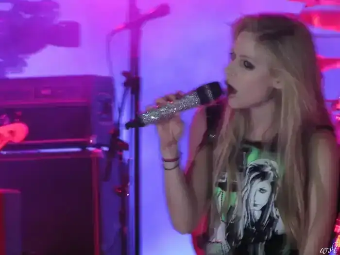
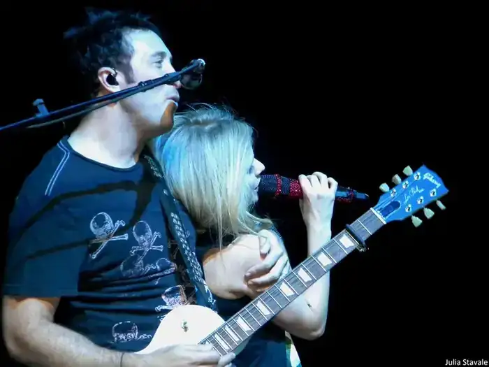

The claim
The claim, circulating since around 2005, is that the Canadian singer Avril Lavigne died in 2003 and was replaced by a lookalike named Melissa Vandella, who has continued her career. The evidence offered is comparison of photographs before and after the alleged date: differences in facial proportions, height and style.
Maps, diagrams and images





The problems
The photographs span years during which a person's face, weight, hair and makeup change normally, and the comparison relies on selecting images that support the claim. Lavigne has continued to perform, record and give interviews, and there is no documentary, medical or legal evidence of a death and substitution.
The claim is a well-known example of a 'celebrity death replacement' legend, a genre that also attaches to other figures.
Documented: the claim and its comparison photographs.
Documented: the normal changes the photographs show.
Not established: any death or substitution.
The method: selection of images to fit a conclusion.
The honest label: debunked.
Why it is in the archive
Because it is the purest photographic claim in the collection, and because the method is the same one used in earnest on much older objects.
Open resources on this topic
- PapersOpen-access articles: DOAJ · PubMed Central · Internet Archive Scholar
- BooksPublic-domain and borrowable copies: Open Library · Project Gutenberg · Google Books · Internet Archive
Cite this page
Momin, S. (2026). Avril Lavigne Was Replaced. The Larger World Archive. https://drsamonline.github.io/LARGE_GLOBE/avril-replaced.htmlMomin, Sohil. “Avril Lavigne Was Replaced.” The Larger World Archive, 2026, https://drsamonline.github.io/LARGE_GLOBE/avril-replaced.html.Momin, Sohil. “Avril Lavigne Was Replaced.” The Larger World Archive, 2026. https://drsamonline.github.io/LARGE_GLOBE/avril-replaced.html.@misc{avril2026avril,
author = {Momin, Sohil},
title = {Avril Lavigne Was Replaced},
year = {2026},
howpublished = {The Larger World Archive},
url = {https://drsamonline.github.io/LARGE_GLOBE/avril-replaced.html},
note = {Last reviewed 20 November 2026}
}Last reviewed 20 November 2026 · Corrections policy · this page is not peer reviewed
Sources for this page
- Wikipedia, “Avril Lavigne” — the singeren.wikipedia.org
- Wikipedia, “Confirmation bias” — the method's erroren.wikipedia.org
- Wikipedia, “Doppelgänger” — the older folkloreen.wikipedia.org
- Wikipedia, “Death hoax” — the genreen.wikipedia.org